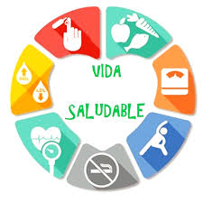

a continuacion contintinuacion veremos este
videohacerca sobre que son los habitos saludables y por que son importanstes
despues de ese pequeño pero importante video ahora haremos una tabla de el buen comer de lo que deberiamos consumir al dia
| edad | lipidos | hidratos de carbono | frutas | verduras |
|---|---|---|---|---|
| 10 | 125g | 60g | 2 tazas | 2.5 tazas | 11 | 125g | 60g | 2 tazas | 2.5 tazas | 12 | 125g | 60g | 2 tazas | 3 tazas |
para finalizar esta pequeña presentacion vamos a escuchar el siguiente audio